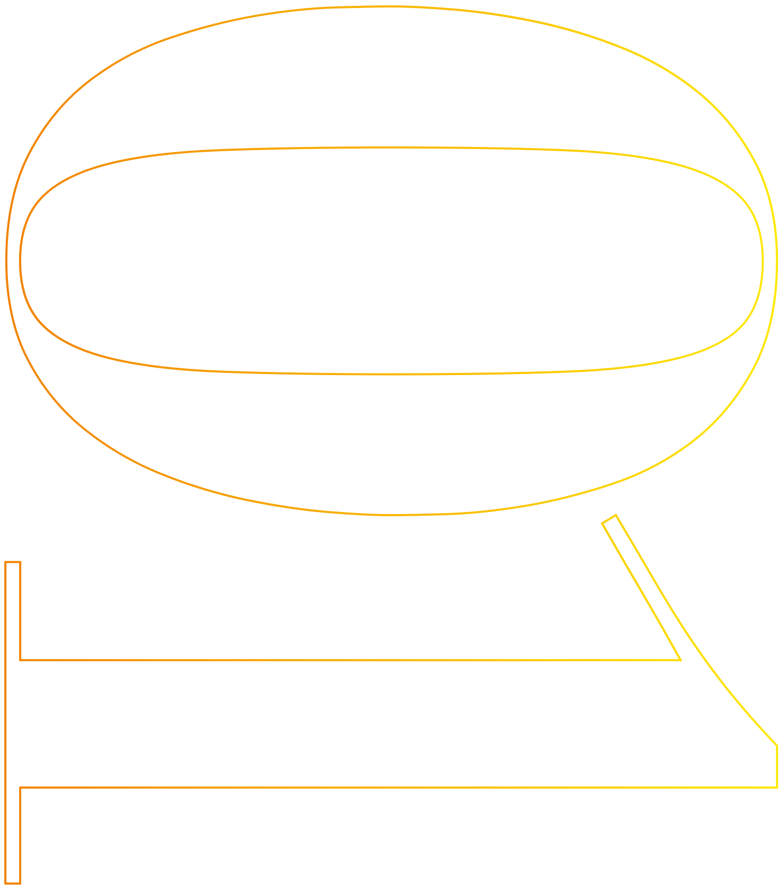
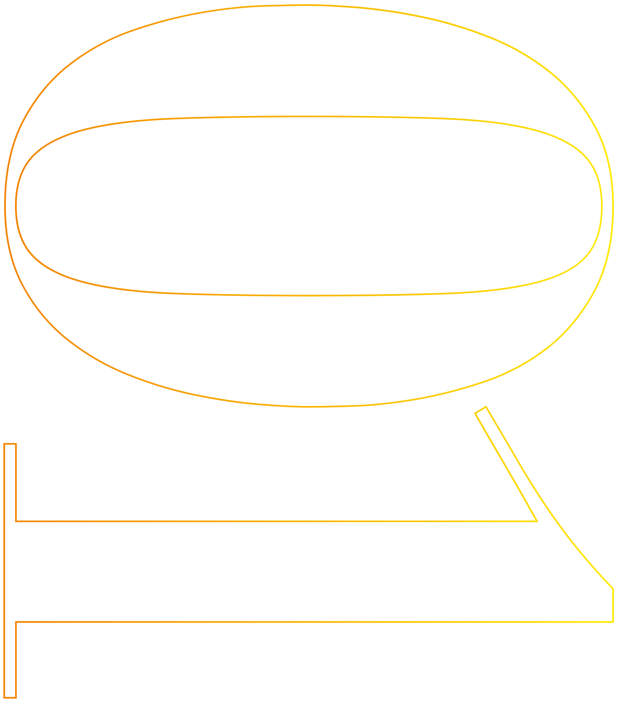
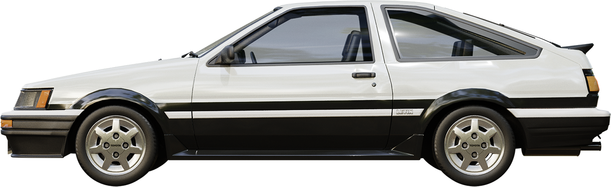
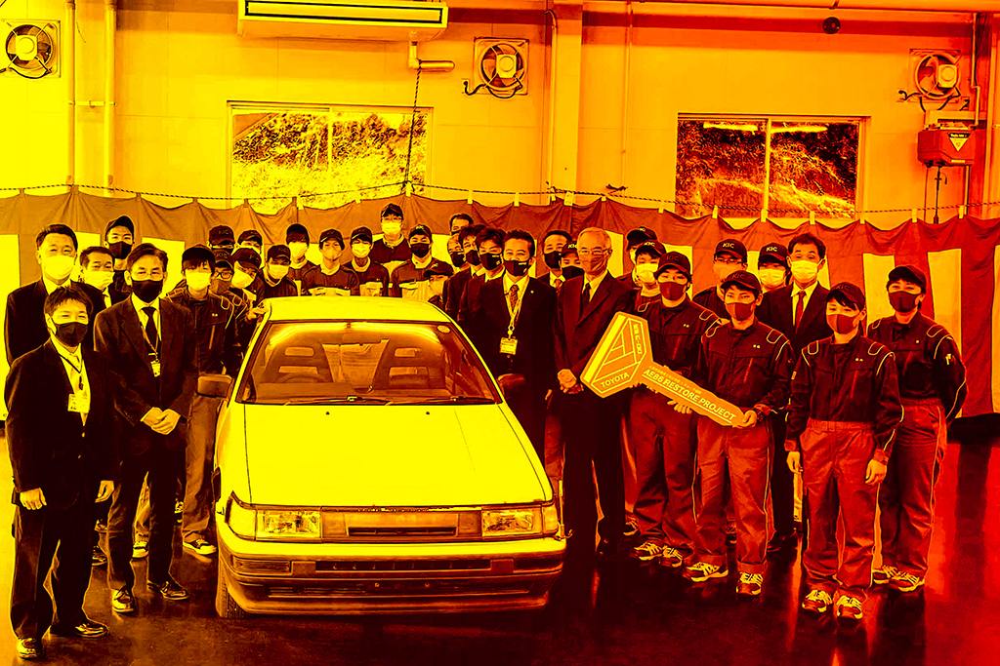
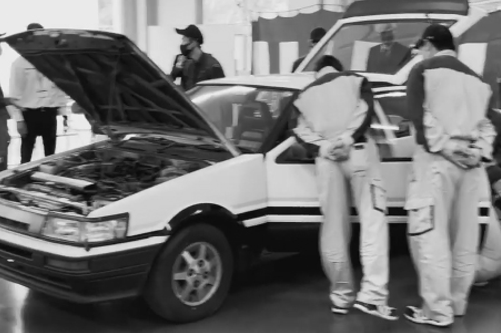

カローラ レビンは、
トヨタ自動車がかつて生産販売していた
1,600ccクラスの小型クーペ。
カローラセダンをベースにされており、
スプリンタートレノとシャーシーはもちろん、
内外装部品のほとんどを共用する姉妹車である。
トヨタ自動車がかつて生産販売していた
1,600ccクラスの小型クーペ。
カローラセダンをベースにされており、
スプリンタートレノとシャーシーはもちろん、
内外装部品のほとんどを共用する姉妹車である。
1990年代後半に一躍ブームとなった人気アニメでも登場。
その物語の主人公が乗っていたクルマが
通称「ハチロク」と呼ばれている。
その物語の主人公が乗っていたクルマが
通称「ハチロク」と呼ばれている。
正式には、1983年にトヨタが発売した
4代目「カローラレビン／スプリンタートレノ
（ AE86型 ）」のことを指し
世界規模で有名な日本車の
ひとつともいえる人気車両です。
4代目「カローラレビン／スプリンタートレノ
（ AE86型 ）」のことを指し
世界規模で有名な日本車の
ひとつともいえる人気車両です。




名車レビンがK I C の前に姿を現す
名車レビンが
K I C の前に姿を現す


長い眠りから…AE86レビンを蘇らせるプロジェクト始動。
トヨタカローラ福岡と久留米自動車工科大学校が、
共同で行うレストアプロジェクト。
トヨタカローラ福岡と久留米自動車工科大学校が、
共同で行うレストアプロジェクト。
これから自動車整備士を目指す若い方に、
自動車整備士の重要性とレストアの面白さを伝えるために
２０２１年５月１４日 トヨタカローラ福岡より、
AE８６型「カローラレビン」が贈呈されました。
納車式典にて、カローラ金子護社長より
「縁ある人を笑顔にすることを大事にしている。
今回のプロジェクトが一人でも多くの人を笑顔にする
ことにつながれば」と熱いメッセージをいただきました。
自動車整備士の重要性とレストアの面白さを伝えるために
２０２１年５月１４日 トヨタカローラ福岡より、
AE８６型「カローラレビン」が贈呈されました。
納車式典にて、カローラ金子護社長より
「縁ある人を笑顔にすることを大事にしている。
今回のプロジェクトが一人でも多くの人を笑顔にする
ことにつながれば」と熱いメッセージをいただきました。
２０２２年３月の完成を目標に、授業にてレストアを
進めていき、
そして４月以降には、
GRガレージ福岡空港と提携し、
レースへの参戦も目指していきます。
進めていき、
そして４月以降には、
GRガレージ福岡空港と提携し、
レースへの参戦も目指していきます。
時代を超えた名車を
産学共同プロジェクトにて
美しく、そしてパワフルに
蘇らせる。